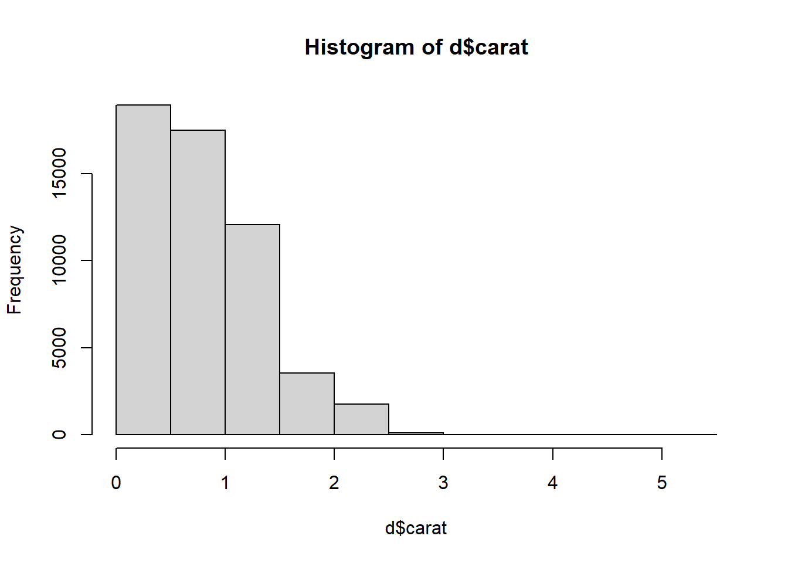
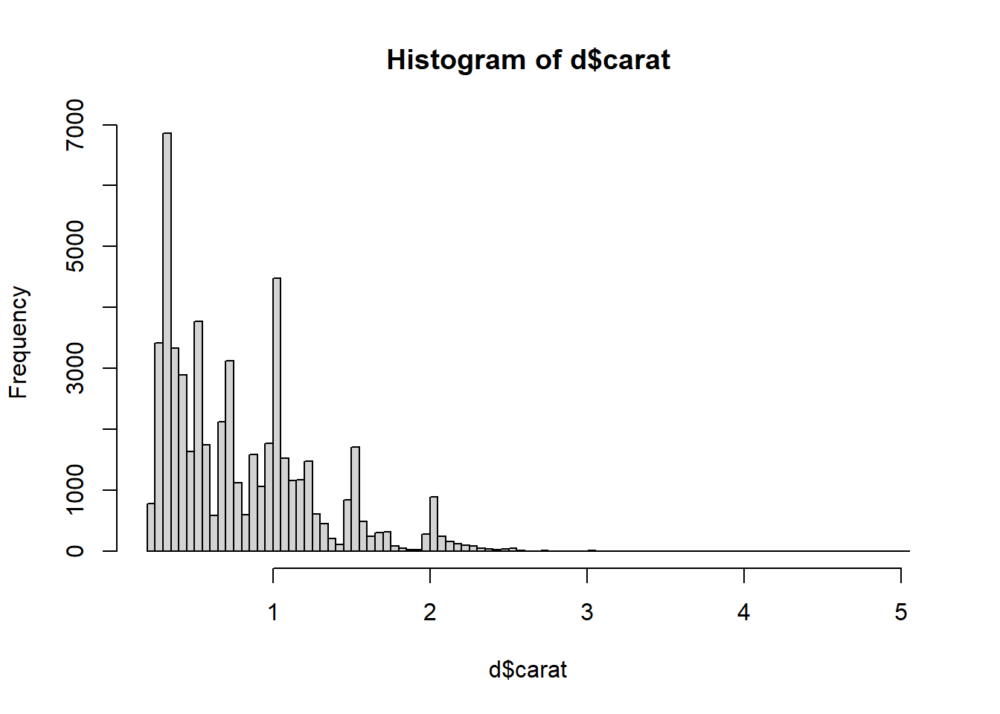
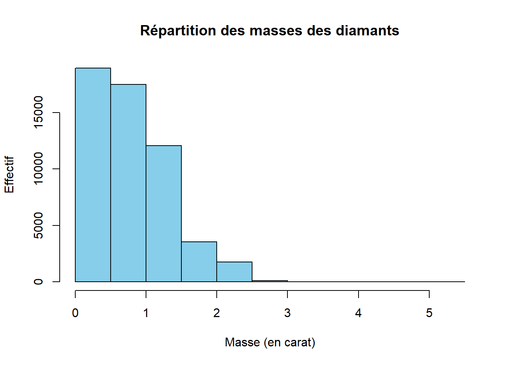
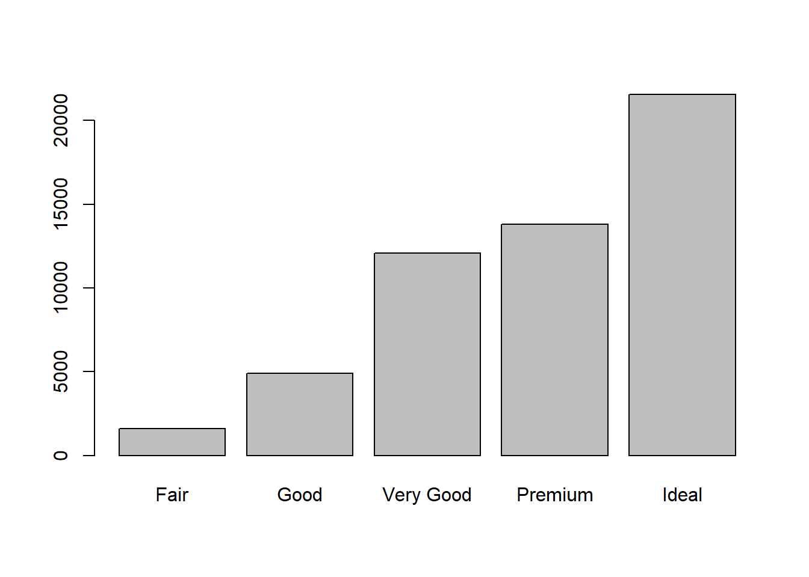
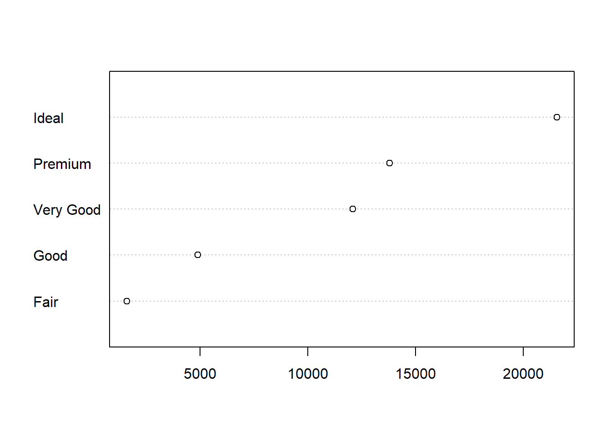

2 * 2[1] 4Ce document est une introduction à R pour l’analyse de données. Il a été construit en adaptant différents contenus, notamment :
Introduction à R et au tidyverse (Julien Barnier - 2023)
R for Data Science (2e) (Hadley Wickham, Mine Çetinkaya-Rundel, and Garrett Grolemund - 2023)
Vous pourrez trouver de nombreuses ressources utiles sur Internet. Nous vous conseillons les très pratique CheatSheet :
Pour la suite des opérations, vous devez avoir installé R et RStudio sur votre machine. Démarrez RStudio.
RStudio est ce qu’on appelle un IDE, pour Environnement de Développement Intégré (Integrated Development Environment en anglais), qui facile le développement et l’utilisation de programmes R.
N’allons pas directement travailler dans la console mais plutôt dans un script (un fichier texte dans lequel nous allons lister les instructions). Ouvrez donc un nouveau “R script” et enregistrez-le. Pour exécuter une ligne, sélectionnez la ou mettez votre curseur sur cette ligne et appuyez sur Ctrl + ↵
2 * 2[1] 4Il peut arriver qu’on saisisse une commande de manière incomplète : oubli d’une parenthèse, faute de frappe, etc. Dans ce cas, R remplace l’invite de commande habituel par un signe +.
2 *
+Cela signifie qu’il “attend la suite”. On peut alors soit compléter la commande sur cette nouvelle ligne et appuyer sur Entrée, soit, si on est perdu, tout annuler et revenir à l’invite de commandes normal en appuyant sur Esc ou Échap.
Faire des calculs c’est bien, mais il serait intéressant de pouvoir stocker un résultat quelque part pour pouvoir le réutiliser ultérieurement sans avoir à faire du copier/coller.
Pour conserver le résultat d’une opération, on peut le stocker dans une variable à l’aide de l’opérateur d’assignation <-. Cette “flèche” stocke ce qu’il y a à sa droite dans une variable dont le nom est indiqué à sa gauche.
Par exemple :
x <- 2Cette commande peut se lire “prend la valeur 2 et mets la dans une variable qui s’appelle x”.
Si on exécute une commande comportant juste le nom d’une variable, R affiche son contenu.
x[1] 2On voit donc que notre variable x contient bien la valeur 2.
On peut évidemment réutiliser cette variable dans d’autres opérations : R le remplacera alors par sa valeur.
x + 4[1] 6On peut créer autant de variables que l’on veut.
x <- 2
y <- 5
resultat <- x + y
resultat[1] 7Quand on assigne une nouvelle valeur à une variable déjà existante, la valeur précédente est perdue. Les variables n’ont pas de mémoire.
x <- 2
x <- 5
x[1] 5De la même manière, assigner une variable à une autre ne crée pas de “lien” entre les deux. Cela copie juste la valeur de la variable de droite dans celle de gauche :
x <- 1
y <- 3
x <- y
x[1] 3## Si on modifie y, cela ne modifie pas x
y <- 4
x[1] 3On le verra, les variable peuvent contenir tout un tas d’informations. Jusqu’ici on n’a stocké que des nombres, mais ils peuvent aussi contenir des chaînes de caractères (du texte), qu’on délimite avec des guillemets simples ou doubles (' ou ") :
chien <- "Chihuahua"
chien[1] "Chihuahua"Si nous voulons stocker plusieurs valeurs d’un coup, nous pouvons le faire dans un seul objet, de type vecteur, avec la syntaxe suivante :
tailles <- c(156, 164, 197, 147, 173)Si on affiche le contenu de cet objet, on voit qu’il contient bien l’ensemble des tailles saisies.
tailles[1] 156 164 197 147 173Un vecteur dans R est un objet qui peut contenir plusieurs informations du même type, potentiellement en très grand nombre.
L’avantage d’un vecteur est que lorsqu’on lui applique une opération, celle-ci s’applique à toutes les valeurs qu’il contient. Ainsi, si on veut la taille en mètres plutôt qu’en centimètres, on peut faire :
tailles_m <- tailles / 100
tailles_m[1] 1.56 1.64 1.97 1.47 1.73Cela fonctionne pour toutes les opérations de base.
tailles + 10[1] 166 174 207 157 183tailles^2[1] 24336 26896 38809 21609 29929Imaginons maintenant qu’on a aussi demandé aux cinq mêmes personnes leur poids en kilos. On peut créer un deuxième vecteur :
poids <- c(45, 59, 110, 44, 88)On peut alors effectuer des calculs utilisant nos deux vecteurs tailles et poids. On peut par exemple calculer l’indice de masse corporelle (IMC) de chacun de nos enquêtés en divisant leur poids en kilo par leur taille en mètre au carré :
imc <- poids / (tailles / 100) ^ 2
imc[1] 18.49112 21.93635 28.34394 20.36189 29.40292Un vecteur peut contenir des nombres, mais il peut aussi contenir du texte. Imaginons qu’on a demandé aux 5 mêmes personnes leur niveau de diplôme : on peut regrouper l’information dans un vecteur de chaînes de caractères. Une chaîne de caractère contient du texte libre, délimité par des guillemets simples ou doubles.
diplome <- c("CAP", "Bac", "Bac+2", "CAP", "Bac+3")
diplome[1] "CAP" "Bac" "Bac+2" "CAP" "Bac+3"L’opérateur :, lui, permet de générer rapidement un vecteur comprenant tous les nombres entre deux valeurs, opération assez courante sous R :
x <- 1:10
x [1] 1 2 3 4 5 6 7 8 9 10Enfin, notons qu’on peut accéder à un élément particulier d’un vecteur en faisant suivre le nom du vecteur de crochets contenant le numéro de l’élément désiré.
diplome[2][1] "Bac"Cette opération, qui utilise l’opérateur [], permet donc la sélection d’éléments d’un vecteur.
Dernière remarque, si on affiche dans la console un vecteur avec beaucoup d’éléments, ceux-ci seront répartis sur plusieurs lignes. Par exemple, si on a un vecteur de 50 nombres on peut obtenir quelque chose comme :
[1] 294 425 339 914 114 896 716 648 915 587 181 926 489
[14] 848 583 182 662 888 417 133 146 322 400 698 506 944
[27] 237 324 333 443 487 658 793 288 897 588 697 439 697
[40] 914 694 126 969 744 927 337 439 226 704 635On remarque que R ajoute systématiquement un nombre entre crochets au début de chaque ligne : il s’agit en fait de la position du premier élément de la ligne dans le vecteur. Ainsi, le 848 de la deuxième ligne est le 14e élément du vecteur, le 914 de la dernière ligne est le 40e, etc.
Ceci explique le [1] qu’on obtient quand on affiche un simple nombre1 :
[1] 4Nous savons désormais effectuer des opérations arithmétiques de base sur des nombres et des vecteurs, et stocker des valeurs dans des objets pour pouvoir les réutiliser plus tard.
Pour aller plus loin, nous devons aborder les fonctions qui sont, avec les objets, un deuxième concept de base de R. On utilise des fonctions pour effectuer des calculs, obtenir des résultats et accomplir des actions.
Formellement, une fonction a un nom, elle prend en entrée entre parenthèses un ou plusieurs arguments (ou paramètres), et retourne un résultat.
Prenons tout de suite un exemple. Si on veut connaître le nombre d’éléments du vecteur tailles que nous avons construit précédemment, on peut utiliser la fonction length, de cette manière :
length(tailles)[1] 5Ici, length est le nom de la fonction, on l’appelle en lui passant un argument entre parenthèses (en l’occurrence notre vecteur tailles), et elle nous renvoie un résultat, à savoir le nombre d’éléments du vecteur passé en paramètre.
Autre exemple, les fonctions min et max retournent respectivement les valeurs minimales et maximales d’un vecteur de nombres.
min(tailles)[1] 147max(tailles)[1] 197La fonction mean calcule et retourne la moyenne d’un vecteur de nombres.
mean(tailles)[1] 167.4La fonction sum retourne la somme de tous les éléments du vecteur.
sum(tailles)[1] 837Jusqu’à présent on n’a vu que des fonctions qui calculent et retournent un unique nombre. Mais une fonction peut renvoyer d’autres types de résultats. Par exemple, la fonction range (étendue) renvoie un vecteur de deux nombres, le minimum et le maximum.
range(tailles)[1] 147 197Ou encore, la fonction unique, qui supprime toutes les valeurs en double dans un vecteur, qu’il s’agisse de nombres ou de chaînes de caractères.
diplome <- c("CAP", "Bac", "Bac+2", "CAP", "Bac+3")
unique(diplome)[1] "CAP" "Bac" "Bac+2" "Bac+3"Une fonction peut prendre plusieurs arguments, dans ce cas on les indique entre parenthèses en les séparant par des virgules.
On a déjà rencontré un exemple de fonction acceptant plusieurs arguments : la fonction c, qui combine l’ensemble de ses arguments en un vecteur2.
tailles <- c(156, 164, 197, 181, 173)Ici, c est appelée en lui passant cinq arguments, les cinq tailles séparées par des virgules, et elle renvoie un vecteur numérique regroupant ces cinq valeurs.
Supposons maintenant que dans notre vecteur tailles nous avons une valeur manquante (une personne a refusé de répondre, ou notre mètre mesureur était en panne). On symbolise celle-ci dans R avec le code interne NA.
tailles <- c(156, 164, 197, NA, 173)
tailles[1] 156 164 197 NA 173NA est l’abbréviation de Not available, non disponible. Cette valeur particulière peut être utilisée pour indiquer une valeur manquante, qu’il s’agisse d’un nombre, d’une chaîne de caractères, etc.
Si on calcule maintenant la taille moyenne à l’aide de la fonction mean, on obtient :
mean(tailles)[1] NAEn effet, R considère par défaut qu’il ne peut pas calculer la moyenne si une des valeurs n’est pas disponible. Dans ce cas il considère que la moyenne est elle-même “non disponible” et renvoie donc NA comme résultat.
On peut cependant indiquer à mean d’effectuer le calcul en ignorant les valeurs manquantes. Ceci se fait en ajoutant un argument supplémentaire, nommé na.rm (abbréviation de NA remove, “enlever les NA”), et de lui attribuer la valeur TRUE (code interne de R signifiant vrai).
mean(tailles, na.rm = TRUE)[1] 172.5Positionner le paramètre na.rm à TRUE indique à la fonction mean de ne pas tenir compte des valeurs manquantes dans le calcul.
Si on ne dit rien à la fonction mean, cet argument a une valeur par défaut, en l’occurrence FALSE (faux), qui fait qu’il ne supprime pas les valeurs manquantes. Les deux commandes suivantes sont donc rigoureusement équivalentes :
mean(tailles)[1] NAmean(tailles, na.rm = FALSE)[1] NALorsqu’on passe un argument à une fonction de cette manière, c’est-à-dire sous la forme nom = valeur, on parle d’argument nommé.
Il est fréquent de ne pas savoir (ou d’avoir oublié) quels sont les arguments d’une fonction, ou comment ils se nomment. On peut à tout moment faire appel à l’aide intégrée à R en passant le nom de la fonction (entre guillemets) à la fonction help.
help("mean")On peut aussi utiliser le raccourci ?mean.
Ces deux commandes affichent une page (en anglais) décrivant la fonction, ses paramètres, son résultat, le tout accompagné de diverses notes, références et exemples. Ces pages d’aide contiennent à peu près tout ce que vous pourrez chercher à savoir, mais elles ne sont pas toujours d’une lecture aisée.
Dans RStudio, les pages d’aide en ligne s’ouvriront par défaut dans la zone en bas à droite, sous l’onglet Help. Un clic sur l’icône en forme de maison vous affichera la page d’accueil de l’aide.
Les commentaires sont un élément très important d’un script. Il s’agit de texte libre, ignoré par R, et qui permet de décrire les étapes du script, sa logique, les raisons pour lesquelles on a procédé de telle ou telle manière… Il est primordial de documenter ses scripts à l’aide de commentaires, car il est très facile de ne plus se retrouver dans un programme qu’on a produit soi-même, même après une courte interruption.
Pour ajouter un commentaire, il suffit de le faire précéder d’un ou plusieurs symboles #. En effet, dès que R rencontre ce caractère, il ignore tout ce qui se trouve derrière, jussqu’à la fin de la ligne.
On peut donc documenter le script précédent :
# Saisie des tailles et poids des enquêtés
tailles <- c(156, 164, 197, 147, 173)
poids <- c(45, 59, 110, 44, 88)
# Calcul des tailles et poids moyens
mean(tailles)
mean(poids)
# Calcul de l'IMC (poids en kilo divisé par les tailles en mètre au carré)
imc <- poids / (tailles / 100) ^ 2
# Valeurs extrêmes de l'IMC
min(imc)
max(imc)R étant un logiciel libre, il bénéficie d’un développement communautaire riche et dynamique. L’installation de base de R permet de faire énormément de choses, mais le langage dispose en plus d’un système d’extensions permettant d’ajouter facilement de nouvelles fonctionnalités. La plupart des extensions sont développées et maintenues par la communauté des utilisateurs et utilisatrices de R, et diffusées via un réseau de serveurs nommé CRAN (Comprehensive R Archive Network).
Pour installer une extension, si on dispose d’une connexion Internet, on peut utiliser le bouton Install de l’onglet Packages de RStudio. Il suffit alors d’indiquer le nom de l’extension dans le champ Package et de cliquer sur Install.
On peut aussi installer des extensions en utilisant la fonction install.packages() directement dans la console. Par exemple, pour installer le package tidyverse on peut exécuter la commande :
install.packages("tidyverse")Installer une extension via l’une des deux méthodes précédentes va télécharger l’ensemble des fichiers nécessaires depuis l’une des machines du CRAN, puis installer tout ça sur le disque dur de votre ordinateur. Vous n’avez besoin de le faire qu’une fois, comme vous le faites pour installer un programme sur votre Mac ou PC.
Une fois l’extension installée, il faut la “charger” avant de pouvoir utiliser les fonctions qu’elle propose. Ceci se fait avec la fonction library. Par exemple, pour pouvoir utiliser les fonctions de tidyverse, vous devrez exécuter la commande suivante :
library(tidyverse)Ainsi, on regroupe en général en début de script toute une série d’appels à library qui permettent de charger tous les packages utilisés dans le script.
Construire le vecteur x suivant :
[1] 120 134 256 12Utiliser ce vecteur x pour générer les deux vecteurs suivants :
[1] 220 234 356 112[1] 240 268 512 24On a demandé à 4 ménages le revenu des deux conjoints, et le nombre de personnes du ménage :
conjoint1 <- c(1200, 1180, 1750, 2100)
conjoint2 <- c(1450, 1870, 1690, 0)
nb_personnes <- c(4, 2, 3, 2)Calculer le revenu total de chaque ménage, puis diviser par le nombre de personnes pour obtenir le revenu par personne de chaque ménage.
Calculer le revenu minimum et maximum parmi ceux du premier conjoint.
Recommencer avec les revenus suivants, parmi lesquels l’un des enquetés n’a pas voulu répondre :
conjoint1 <- c(1200, 1180, 1750, NA)Les deux vecteurs suivants représentent les précipitations (en mm) et la température (en °C) moyennes pour chaque mois de l’année pour la ville de Lyon (moyennes calculées sur la période 1981-2010) :
temperature <- c(3.4, 4.8, 8.4, 11.4, 15.8, 19.4, 22.2, 21.6, 17.6, 13.4, 7.6, 4.4)
precipitations <- c(47.2, 44.1, 50.4, 74.9, 90.8, 75.6, 63.7, 62, 87.5, 98.6, 81.9, 55.2)Calculer la température moyenne sur l’année.
Calculer la quantité totale de précipitations sur l’année.
À quoi correspond et comment peut-on interpréter le résultat de la fonction suivante ? Vous pouvez vous aider de la page d’aide de la fonction si nécessaire.
cumsum(precipitations) [1] 47.2 91.3 141.7 216.6 307.4 383.0 446.7 508.7 596.2 694.8 776.7 831.9Même question pour :
diff(temperature) [1] 1.4 3.6 3.0 4.4 3.6 2.8 -0.6 -4.0 -4.2 -5.8 -3.2On a relevé les notes en maths, anglais et sport d’une classe de 6 élèves et on a stocké ces données dans trois vecteurs :
maths <- c(12, 16, 8, 18, 6, 10)
anglais <- c(14, 9, 13, 15, 17, 11)
sport <- c(18, 11, 14, 10, 8, 12)Calculer la moyenne des élèves de la classe en anglais.
Calculer la moyenne générale de chaque élève (la moyenne des ses notes dans les trois matières).
Essayez de comprendre le résultat des deux fonctions suivantes (vous pouvez vous aider de la page d’aide de ces fonctions) :
pmin(maths, anglais, sport)[1] 12 9 8 10 6 10pmax(maths, anglais, sport)[1] 18 16 14 18 17 12Dans cette partie nous allons (enfin) travailler sur des “vraies” données, et utiliser un jeu de données présent dans l’extension ggplot2. Nous devons donc avant toute chose installer cette extension. Si vous avez installer le package tidyverse, il devrait déjà être installé !
Si ce n’est pas le cas, référez-vous à la section Section 2.5 pour voir comment installer un package.
Le jeu de données que nous allons utiliser contient les prix de vente et des attributs de diamants.
Pour pouvoir utiliser ces données, il faut d’abord charger l’extension ggplot2 (après l’avoir installée, bien entendu) :
library(ggplot2)L’utilisation de library permet de rendre “disponibles”, dans notre session R, les fonctions et jeux de données inclus dans l’extension.
Nous devons ensuite indiquer à R que nous souhaitons accéder au jeu de données à l’aide de la commande data :
data("diamonds")Cette commande ne renvoie aucun résultat particulier (sauf en cas d’erreur), mais vous devriez voir apparaître dans l’onglet Environment de RStudio un nouvel objet nommé diamonds.
Cette variable est d’un type nouveau : il s’agit d’un tableau de données.
Un data frame (ou tableau de données, ou table) est un type d’objet R qui contient des données au format tabulaire, avec les observations en ligne et les variables en colonnes, comme dans une feuille de tableur Excel.
Si on se contente d’exécuter le nom de notre tableau de données R va, comme à son habitude, nous l’afficher dans la console, ce qui est tout sauf utile.
diamondsUne autre manière d’afficher le contenu du tableau est de cliquer sur l’icône en forme de tableau à droite du nom de l’objet dans l’onglet Environment ou d’utiliser la fonction View :
View(diamonds)Dans les deux cas votre tableau devrait s’afficher dans RStudio sous forme de tableau directement.
Il est important de comprendre que l’objet diamonds contient l’intégralité des données du tableau. On voit donc qu’un objet peut contenir des données de types très différents (simple nombre, texte, vecteur, tableau de données entier), et être potentiellement de très grande taille3.
Sous R, on peut importer ou créer autant de tableaux de données qu’on le souhaite, dans les limites des capacités de sa machine.
Un data frame peut être manipulé comme les autres objets vus précédemment. On peut par exemple faire :
d <- diamondsce qui va entraîner la copie de l’ensemble de nos données dans un nouvel objet nommé d. Ceci peut paraître parfaitement inutile mais a en fait l’avantage de fournir un objet avec un nom beaucoup plus court, ce qui diminuera la quantité de texte à saisir par la suite.
Pour résumer, notre fichier de travail sur les données des diamants pourraient donc ressembler à ceci :
## Chargement des extensions nécessaires
library(ggplot2)
## Jeu de données diamonds
data(diamonds)
d <- diamondsUn tableau étant un objet comme un autre, on peut lui appliquer des fonctions. Par exemple, nrow et ncol retournent le nombre de lignes et de colonnes du tableau.
nrow(d)[1] 53940ncol(d)[1] 10La fonction dim renvoie ses dimensions, donc les deux nombres précédents.
dim(d)[1] 53940 10La fonction names retourne les noms des colonnes du tableau, c’est-à-dire la liste de nos variables.
names(d) [1] "carat" "cut" "color" "clarity" "depth" "table" "price"
[8] "x" "y" "z" Enfin, la fonction str renvoie un descriptif plus détaillé de la structure du tableau. Elle liste les différentes variables, indique leur type 4 et affiche les premières valeurs.
str(d)tibble [53,940 × 10] (S3: tbl_df/tbl/data.frame)
$ carat : num [1:53940] 0.23 0.21 0.23 0.29 0.31 0.24 0.24 0.26 0.22 0.23 ...
$ cut : Ord.factor w/ 5 levels "Fair"<"Good"<..: 5 4 2 4 2 3 3 3 1 3 ...
$ color : Ord.factor w/ 7 levels "D"<"E"<"F"<"G"<..: 2 2 2 6 7 7 6 5 2 5 ...
$ clarity: Ord.factor w/ 8 levels "I1"<"SI2"<"SI1"<..: 2 3 5 4 2 6 7 3 4 5 ...
$ depth : num [1:53940] 61.5 59.8 56.9 62.4 63.3 62.8 62.3 61.9 65.1 59.4 ...
$ table : num [1:53940] 55 61 65 58 58 57 57 55 61 61 ...
$ price : int [1:53940] 326 326 327 334 335 336 336 337 337 338 ...
$ x : num [1:53940] 3.95 3.89 4.05 4.2 4.34 3.94 3.95 4.07 3.87 4 ...
$ y : num [1:53940] 3.98 3.84 4.07 4.23 4.35 3.96 3.98 4.11 3.78 4.05 ...
$ z : num [1:53940] 2.43 2.31 2.31 2.63 2.75 2.48 2.47 2.53 2.49 2.39 ...À noter que sous RStudio, on peut afficher à tout moment la structure d’un objet en cliquant sur l’icône de triangle sur fond bleu à gauche du nom de l’objet dans l’onglet Environment.
Une opération très importante est l’accès aux variables du tableau (à ses colonnes) pour pouvoir les manipuler, effectuer des calculs, etc. On utilise pour cela l’opérateur $, qui permet d’accéder aux colonnes du tableau. Ainsi, si l’on tape :
d$cut [1] Ideal Premium Good Premium Good Very Good Very Good
[8] Very Good Fair Very Good Good Ideal Premium Ideal
[15] Premium Premium Ideal Good Good Very Good Good
[22] Very Good Very Good Very Good Very Good Very Good Premium Very Good
[29] Very Good Very Good Very Good Very Good Very Good Very Good Very Good
[36] Good Good Good Very Good Ideal Ideal Ideal
[43] Good Good Good Premium Very Good Good Very Good
[50] Very Good Very Good Ideal Ideal Premium Premium Ideal
[57] Premium Very Good Very Good Good Ideal Premium Ideal
[64] Ideal Premium Ideal Ideal Very Good Premium Premium
[71] Very Good Very Good Premium Premium Good Very Good Very Good
[78] Very Good Very Good Very Good Very Good Very Good Ideal Ideal
[85] Good Premium Premium Premium Premium Premium Ideal
[92] Fair Ideal Very Good Very Good Good Good Fair
[99] Very Good Premium Very Good Premium Ideal Premium Ideal
[106] Ideal Premium Ideal Ideal Ideal Ideal Ideal
[113] Premium Very Good Ideal Ideal Premium Ideal Ideal
[120] Ideal Ideal Ideal Very Good Fair Fair Premium
[127] Premium Very Good Fair Fair Ideal Very Good Ideal
[134] Very Good Very Good Premium Very Good Premium Ideal Ideal
[141] Premium Premium Very Good Very Good Ideal Good Very Good
[148] Very Good Very Good Ideal Premium Ideal Premium Premium
[155] Very Good Ideal Ideal Premium Premium Ideal Premium
[162] Very Good Very Good Ideal Ideal Very Good Very Good Ideal
[169] Ideal Good Ideal Premium Very Good Ideal Ideal
[176] Good Very Good Very Good Premium Ideal Ideal Ideal
[183] Ideal Ideal Good Ideal Very Good Premium Very Good
[190] Good Good Ideal Premium Premium Premium Premium
[197] Premium Premium Ideal Premium
[ reached getOption("max.print") -- omitted 53740 entries ]
Levels: Fair < Good < Very Good < Premium < IdealR va afficher l’ensemble des valeurs de la variable cut dans la console, ce qui est à nouveau fort peu utile. Mais cela nous permet de constater que d$cut est un vecteur de chaînes de caractères tels qu’on en a déjà rencontré précédemment.
La fonction table$colonne renvoie donc la colonne nommée colonne du tableau table, c’est-à-dire un vecteur, en général de nombres ou de chaînes de caractères.
Si on souhaite afficher seulement les premières ou dernières valeurs d’une variable ou d’un tableau, on peut utiliser les fonctions head et tail.
head(d)# A tibble: 6 × 10
carat cut color clarity depth table price x y z
<dbl> <ord> <ord> <ord> <dbl> <dbl> <int> <dbl> <dbl> <dbl>
1 0.23 Ideal E SI2 61.5 55 326 3.95 3.98 2.43
2 0.21 Premium E SI1 59.8 61 326 3.89 3.84 2.31
3 0.23 Good E VS1 56.9 65 327 4.05 4.07 2.31
4 0.29 Premium I VS2 62.4 58 334 4.2 4.23 2.63
5 0.31 Good J SI2 63.3 58 335 4.34 4.35 2.75
6 0.24 Very Good J VVS2 62.8 57 336 3.94 3.96 2.48tail(d, 10)# A tibble: 10 × 10
carat cut color clarity depth table price x y z
<dbl> <ord> <ord> <ord> <dbl> <dbl> <int> <dbl> <dbl> <dbl>
1 0.71 Premium E SI1 60.5 55 2756 5.79 5.74 3.49
2 0.71 Premium F SI1 59.8 62 2756 5.74 5.73 3.43
3 0.7 Very Good E VS2 60.5 59 2757 5.71 5.76 3.47
4 0.7 Very Good E VS2 61.2 59 2757 5.69 5.72 3.49
5 0.72 Premium D SI1 62.7 59 2757 5.69 5.73 3.58
6 0.72 Ideal D SI1 60.8 57 2757 5.75 5.76 3.5
7 0.72 Good D SI1 63.1 55 2757 5.69 5.75 3.61
8 0.7 Very Good D SI1 62.8 60 2757 5.66 5.68 3.56
9 0.86 Premium H SI2 61 58 2757 6.15 6.12 3.74
10 0.75 Ideal D SI2 62.2 55 2757 5.83 5.87 3.64Le deuxième argument numérique permet d’indiquer le nombre de valeurs à afficher.
On peut aussi utiliser l’opérateur $ pour créer une nouvelle variable dans notre tableau : pour cela, il suffit de lui assigner une valeur.
Par exemple, la variable carat contient la masse du diamand. Le carat métrique équivaut à 200mg.
head(d$carat, 10) [1] 0.23 0.21 0.23 0.29 0.31 0.24 0.24 0.26 0.22 0.23On peut vouloir créer une nouvelle variable dans notre tableau qui contienne la masse du diamant en mg :
d$mass <- d$carat * 200On peut alors constater, soit visuellement soit dans la console, qu’une nouvelle variable (une nouvelle colonne) a bien été ajoutée au tableau.
head(d)# A tibble: 6 × 11
carat cut color clarity depth table price x y z mass
<dbl> <ord> <ord> <ord> <dbl> <dbl> <int> <dbl> <dbl> <dbl> <dbl>
1 0.23 Ideal E SI2 61.5 55 326 3.95 3.98 2.43 46
2 0.21 Premium E SI1 59.8 61 326 3.89 3.84 2.31 42
3 0.23 Good E VS1 56.9 65 327 4.05 4.07 2.31 46
4 0.29 Premium I VS2 62.4 58 334 4.2 4.23 2.63 58
5 0.31 Good J SI2 63.3 58 335 4.34 4.35 2.75 62
6 0.24 Very Good J VVS2 62.8 57 336 3.94 3.96 2.48 48On a donc désormais accès à un tableau de données d, dont les lignes sont des observations (des diamants), et les colonnes des variables (des caractéristiques de chacun de ces diamants), et on sait accéder à ces variables grâce à l’opérateur $.
Si on souhaite analyser ces variables, les méthodes et fonctions utilisées seront différentes selon qu’il s’agit d’une variable quantitative (variable numérique pouvant prendre un grand nombre de valeurs : l’âge, le revenu, un pourcentage…) ou d’une variable qualitative (variable pouvant prendre un nombre limité de valeurs appelées modalités : la découpe, la couleur ou la clareté).
Une variable quantitative est une variable de type numérique (un nombre) qui peut prendre un grand nombre de valeurs. On en a plusieurs dans notre jeu de données, notamment la masse (variable carat ou masss) ou les tailles (x, y, etc.).
Caractériser une variable quantitative, c’est essayer de décrire la manière dont ses valeurs se répartissent, ou se distribuent.
Pour cela on peut commencer par regarder les valeurs extrêmes, avec les fonctions min, max ou range.
min(d$carat)[1] 0.2max(d$carat)[1] 5.01range(d$carat)[1] 0.20 5.01On peut aussi calculer des indicateurs de centralité : ceux-ci indiquent autour de quel nombre se répartissent les valeurs de la variable. Il y en a plusieurs, le plus connu étant la moyenne, qu’on peut calculer avec la fonction mean.
mean(d$carat)[1] 0.7979397Il existe aussi la médiane, qui est la valeur qui sépare notre population en deux : on a la moitié de nos observations en-dessous, et la moitié au-dessus. Elle se calcule avec la fonction median.
median(d$carat)[1] 0.7Une différence entre les deux indicateurs est que la médiane est beaucoup moins sensible aux valeurs “extrêmes” : on dit qu’elle est plus robuste.
Les indicateurs de dispersion permettent de mesurer si les valeurs sont plutôt regroupées ou au contraire plutôt dispersées.
L’indicateur le plus simple est l’étendue de la distribution, qui décrit l’écart maximal observé entre les observations :
max(d$carat) - min(d$carat)[1] 4.81Les indicateurs de dispersion les plus utilisés sont la variance ou, de manière équivalente, l’écart-type (qui est égal à la racine carrée de la variance). On obtient la première avec la fonction var, et le second avec sd (abbréviation de standard deviation).
var(d$carat)[1] 0.2246867sd(d$carat)[1] 0.4740112Plus la variance ou l’écart-type sont élevés, plus les valeurs sont dispersées autour de la moyenne. À l’inverse, plus ils sont faibles et plus les valeurs sont regroupées.
Une autre manière de mesurer la dispersion est de calculer les quartiles :
On peut les calculer avec la fonction quantile :
## Premier quartile
quantile(d$carat, prob = 0.25)25%
0.4 ## Troisième quartile
quantile(d$carat, prob = 0.75) 75%
1.04 quantile prend deux arguments principaux : le vecteur dont on veut calculer le quantile, et un argument prob qui indique quel quantile on souhaite obtenir. prob prend une valeur entre 0 et 1 : 0.5 est la médiane, 0.25 le premier quartile, 0.1 le premier décile, etc.
Notons enfin que la fonction summary permet d’obtenir d’un seul coup plusieurs indicateurs classiques :
summary(d$carat) Min. 1st Qu. Median Mean 3rd Qu. Max.
0.2000 0.4000 0.7000 0.7979 1.0400 5.0100 L’outil le plus utile pour étudier la distribution des valeurs d’une variable quantitative reste la représentation graphique.
La représentation la plus courante est sans doute l’histogramme. On peut l’obtenir avec la fonction hist.
hist(d$carat)
Cette fonction n’a pas pour effet direct d’effectuer un calcul ou de nous renvoyer un résultat : elle génère un graphique qui va s’afficher dans l’onglet Plots de RStudio.
On peut personnaliser l’apparence de l’histogramme en ajoutant des arguments supplémentaires à la fonction hist. L’argument le plus important est breaks, qui permet d’indiquer le nombre de classes que l’on souhaite.
hist(d$carat, breaks = 10)
hist(d$carat, breaks = 70)
Le choix d’un “bon” nombre de classes pour un histogramme n’est pas un problème simple : si on a trop peu de classes, on risque d’effacer quasiment toutes les variations, et si on en a trop on risque d’avoir trop de détails et de masquer les grandes tendances.
Les arguments de hist permettent également de modifier la présentation du graphique. On peut ainsi changer la couleur des barres avec col, le titre avec main, les étiquettes des axes avec xlab et ylab, etc. :
hist(d$carat, col = "skyblue",
main = "Répartition des masses des diamants",
xlab = "Masse (en carat)",
ylab = "Effectif")
La fonction hist fait partie des fonctions graphique de base de R. On verra plus en détail d’autres fonctions graphiques dans les prochaines semaines, consacrées à l’extension ggplot2, qui fait partie du tidyverse et qui permet la production et la personnalisation de graphiques complexes.
Une variable qualitative est une variable qui ne peut prendre qu’un nombre limité de valeurs, appelées modalités. Dans notre jeu de données on trouvera par exemple la découpe (cut), la couleur (color), la clareté (clarity).
À noter qu’une variable qualitative peut tout-à-fait être numérique, et que certaines variables peuvent être traitées soit comme quantitatives, soit comme qualitatives.
L’outil le plus utilisé pour représenter la répartition des valeurs d’une variable qualitative est le tri à plat : il s’agit simplement de compter, pour chacune des valeurs possibles de la variable (pour chacune des modalités), le nombre d’observations ayant cette valeur. Un tri à plat s’obtient sous R à l’aide de la fonction table.
table(d$cut)
Fair Good Very Good Premium Ideal
1610 4906 12082 13791 21551 Ce tableau nous indique donc pour chaque qualité de découpe, le nombre de diamants.
Un tableau de ce type peut être affiché ou stocké dans un objet, et on peut à son tour lui appliquer des fonctions. Par exemple, la fonction sort permet de trier le tableau selon la valeur de l’effectif.
d_cut <- table(d$cut)
sort(d_cut)
Fair Good Very Good Premium Ideal
1610 4906 12082 13791 21551 Attention, par défaut la fonction table n’affiche pas les valeurs manquantes (NA). Si on souhaite les inclure il faut utiliser l’argument useNA = "always", soit : table(d$cut, useNA = "always").
À noter qu’on peut aussi appliquer summary à une variable qualitative. Le résultat est également le tri à plat de la variable, avec en plus le nombre de valeurs manquantes éventuelles.
summary(d$cut) Fair Good Very Good Premium Ideal
1610 4906 12082 13791 21551 On peut représenter graphiquement le tri à plat d’une variable qualitative avec un diagramme en barres, obtenu avec la fonction barplot. Attention, contrairement à hist cette fonction ne s’applique pas directement à la variable mais au résultat du tri à plat de cette variable, calculé avec table. Il faut donc procéder en deux étapes.
d_cut <- table(d$cut)
barplot(d_cut)
On peut aussi trier le tri à plat avec la fonction sort avant de le représenter graphiquement, ce qui peut faciliter la lecture du graphique :
barplot(sort(d_cut))Une alternative au graphique en barres est le diagramme de Cleveland, qu’on peut obtenir avec la fonction dotchart. Celle-ci s’applique elle aussi au tri à plat de la variable calculé avec table.
dotchart(table(d$cut))
Là aussi, pour améliorer la lisibilité du graphique il est préférable de trier le tri à plat de la variable avant de le représenter :
dotchart(sort(table(d$cut)))
Créer un nouveau script qui effectue les actions suivantes :
ggplot2mpgdfdfOn souhaite étudier la consommation en ville et sur autoroute. Pour cela, affichez les principaux indicateurs les variables consernées : valeur minimale, maximale, moyenne, médiane et écart-type. Représentez ensuite leurs distributions par des histogrammes en 10 classes.
Créez un nouvelle variable, conso, qui sera égale à la moyenne de la consommation en ville et de celle sur autoroute. Répondez aux mêmes questions à nouveau avec cette variable.
On s’intéresse maintenant aux marques des voitures, aux classes de voitures et à leur année de production. Faites un tri à plat pour les variables appropriées.
Représentez graphiquement ces effectifs à l’aide d’un graphique en barres.
Et permet de constater que pour R, un nombre est un vecteur à un seul élément.↩︎
c est l’abbréviation de combine, son nom est très court car on l’utilise très souvent↩︎
La seule limite pour la taille d’un objet étant la mémoire vive (RAM) de la machine sur laquelle tourne la session R.↩︎
Les différents types de variables seront décrits plus en détail un peu plus tard↩︎